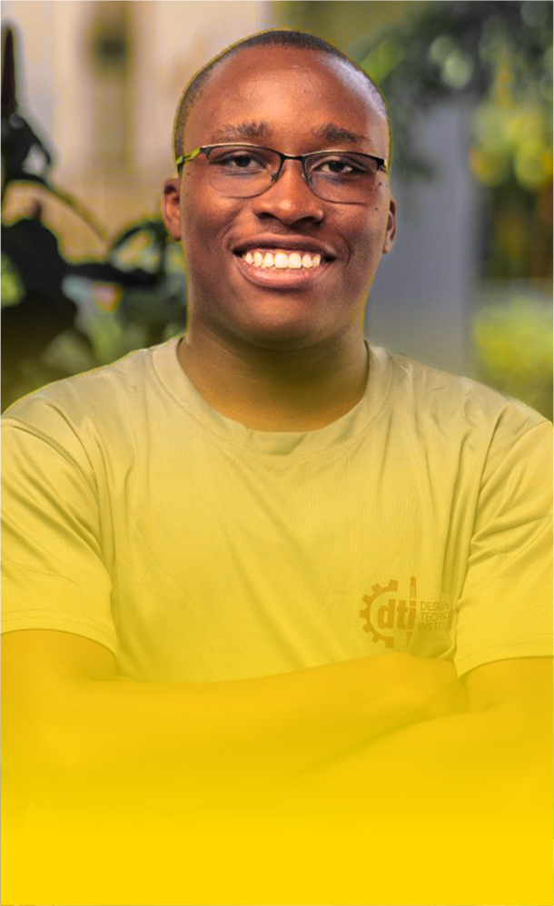

About Me
Get to know the person behind the code.

Hi, I'm Akachukwu Osuka.
I'm a junior web developer based in Accra Ghana, with a strong passion for building beautiful, functional, and user-centric web applications. My journey into tech started with a fascination for how websites work, and it quickly grew into a dedication to learning and mastering the art of web development.
I enjoy turning complex problems into simple, elegant solutions. I'm constantly learning new technologies and methodologies to improve my skills and deliver high-quality work. When I'm not coding, I enjoy exploring new tech trends, reading, and playing games.
My goal is to collaborate on exciting projects that make a positive impact, and I'm eager to contribute my skills to a forward-thinking team.
My Skills
HTML5
CSS3
JavaScript
GitHub
Responsive Design
UIUX Design
Wordpress
Download CV